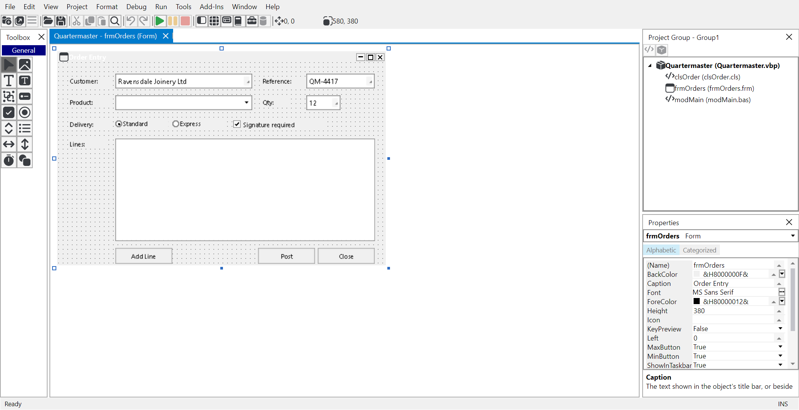
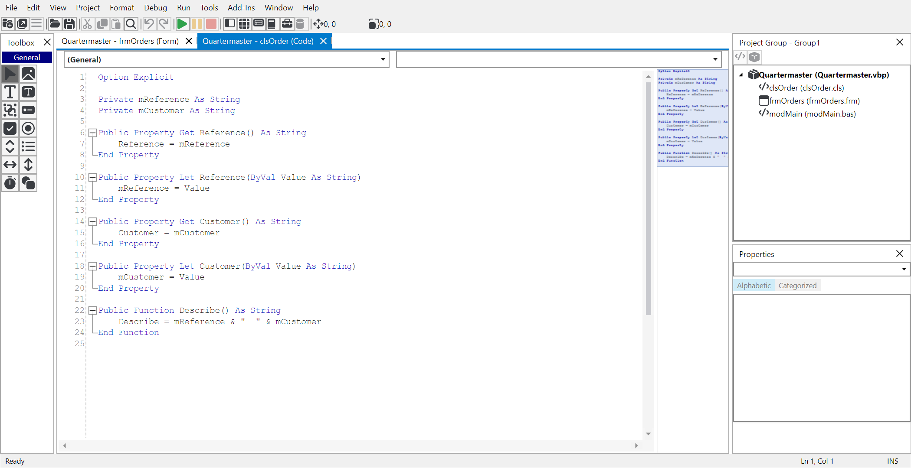
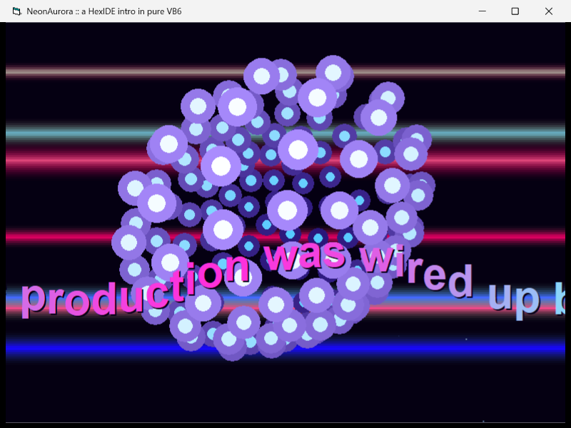
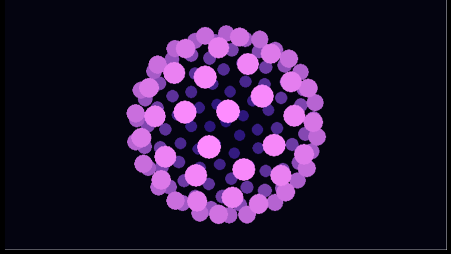
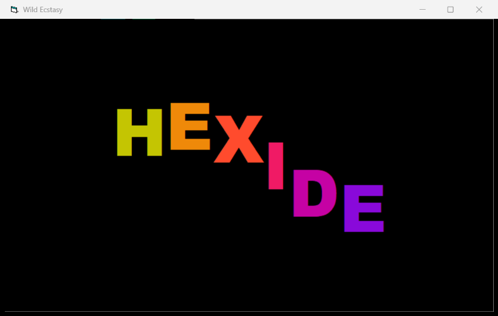

Your favourite IDE, reinvented in the open.
A cross-platform recreation of the Visual Basic 6 workbench — forms, toolbox, properties, project explorer — running natively on Windows, macOS and Linux. It opens and runs real VB6 projects, and it is straight with you about what it cannot yet hand back.
Self-contained — nothing to install first. macOS, Linux and smaller builds.
Workbench
Language
Project

The designer, project explorer and properties window — where your hands expect them.

The code window keeps both VB6 combos. Line numbers, folding and a minimap are the new part.

NeonAurora — per-pixel plasma, glenz vectors and a MIDI chiptune. Written in VB6, compiled by VB6.

NeonVertigo — 130 Fibonacci-distributed vector balls, spun on two axes and painted back to front.
Works
The workbench is real and finished enough to use: designer, toolbox, properties,
project explorer, menu editor, and a reader that opens the actual
.vbp/.frm files rather than importing them.
Bounded
The interpreter runs VB6 well enough to paste something in and watch it go. That is a deliberate ceiling, not a stepping stone — and the limits are written down.
By design
No native compiler. No whole-program analysis. Those belong to a real language engine, and there is a clean seam here for one.
What you get
A workbench, not a tribute act.
Every window is where muscle memory expects it, and the keys still do what your hands
already know. F5 runs. F4 is properties.
F2 is the object browser. Ctrl+G brings up the
Immediate window, where Debug.Print output lands.
Underneath it is a genuine VB6 file format implementation — it reads the real files rather than importing them, which is why a project opens with its own structure intact.
Writing them back is a different problem, and it is not solved yet. The designer writer regenerates a form from an in-memory model instead of round-tripping it, so none of the twenty-two Microsoft-authored forms in the reference corpus survives a save byte-for-byte, and a save can lose companion binaries and rewrite class settings you never edited. That is the current focus, it is tracked in the open, and until it lands you should know exactly what a save changes.
Built with it
Four small programs, and one of them is the point.
Three demoscene intros, written by AI agents driving the running IDE through its automation tools — a developer-build feature today — then compiled, unmodified, by the real VB6 compiler. And one that isn't a demo at all.
neon-aurora
A six-part Amiga-style intro: raster plasma, copper bars, starfield, glenz vector, vector balls, sine-scroller — with MIDI music.
neon-vertigo
130 vector balls on a Fibonacci lattice, spun on two axes, depth-shaded and painted back to front.

wild-ecstasy
"HEXIDE" rippling on per-letter sine waves with colour cycling. A form and a class, about a hundred lines together.
battleship
Not an intro — a cross-check. An object-oriented Battleship engine that produces the same trace, line for line, on this interpreter and inside a native executable from the real 1998 compiler.
Get it
Download
Alpha. It will have rough edges, and the interpreter has known limits — they are all written down. Nothing here is code-signed or notarised: Windows shows a SmartScreen warning (More info, then Run anyway), and on macOS you need to extract in Terminal, because unpacking with Finder applies a quarantine flag an unsigned app cannot clear.
Windows
hexide-windows-amd64-selfcontained.zip
Also arm64. Nothing to install first.
macOS
hexide-macos-arm64-selfcontained.tar.gz
Apple silicon; Intel Macs take amd64. Extract in Terminal with
tar -xzf.
Linux
hexide-linux-amd64-selfcontained.tar.gz
Also arm64. Needs your distro's X11 and fontconfig libraries.
Already have the .NET 10 runtime? The framework-dependent builds are about a third of the size. Or build it from source.